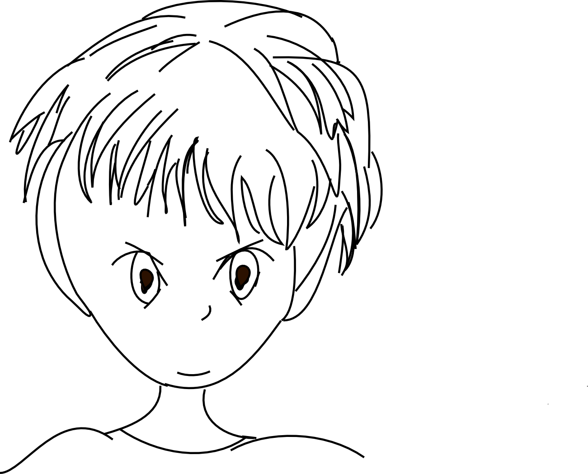

Favourites
How can anyone be passionate about great design but not have a favourite or two web, mobile site or app. I do have a lot of favourites that illustrate good user experience and Information Architecture. Feel free to browse.
UX/Design I 
Bookmarks
Top current reads on my UX Bookshelf
'Sketching User Experiences: The Workbook'by Bill Buxton, Saul Greenberg, Sheelagh Carpendale & Nicolai Marquardt
A very practical and useful book. It looks at how one can sketch to brainstorm, find ideas, and how to iterate and refine your designs. Encourages you to be more creative with ideas and how to find inspiration from everything around you.by Whitney Quesenbery & Kevin Brooks
It goes through how storytelling can aid your understanding of the user and add to your designs. Helps you focus on gathering and sharing information about the users, tasks and goals, giving an insight and understanding.by Indi Young
Looks at how understanding a users mental representation can guide your designs.by Dan Saffer
Helps you focus on the interactive details that form your design with an outcome of highly accurate designs to capture user behaviour.by Donna Spencer
I Love this book – it's a comprehensive aid to organising a website/app as well as non-web, highlighting the methods you can use, looking at your projects' context, goals, stakeholders, technology opportunities/constraints, design constraints, the culture you are working within and how that can affect your project.by Donna Spencer
This book helps you think about content and categories and how you can group information so people can easily find and understand it.by Adrian Mendoza
A Favourite book – looking at how mobile works, the interface elements looking both at Android and iOS, and how to prototype and test in mobile.by Clarissa Peterson
A great book that includes writing responsive code.by Leah Buley
A Fabulous book – Love the “If you only do one thing...” sections in each chapter.by Laura Klein
Using a lean methodology, how to quickly gather useful customer research, to build something users will want to use and usable products. It highlights useful and proven tips and tools for researching and designing an intuitive, usable product.by Jeff Gothelf & Josh Seiden
How to gather user feedback early and validate your ideas with real users in an agile iterative design process.by Jeff Patton
This is aimed at agile/lean projects and shows how user stories work so you can focus on users and their experience.
